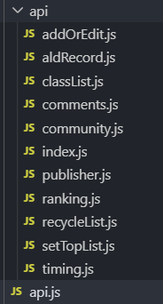

require.context 是由webpack内部实现，require.context在构建时，webpack 在代码中进行解析。
当需要引入文件夹内多个文件模块时，可以使用 require.context 自动化批量引入，而不用手动一条一条添加。
require.context 函数接收三个参数
String 读取文件夹的路径
Boolean 是否遍历文件夹的子目录
RegExp 匹配文件的正则
用我实际开发的场景来做例子，现在文件夹内有多个 api 文件，我需要将这些组合起来

api.js
//引入api文件夹下的api接口
let requireAll = require.context('./api', false, /\.js$/)
//requireAll.keys()为文件名数组; requireAll(apiName)获取文件暴露的内容
const apiArr = requireAll.keys().map(apiName=> requireAll(apiName).default || requireAll(apiName))
//组合接口
let api = apiArr.reduce((prev,curr)=> Object.assign(prev,curr), {})
export default apiruquireAllApi(apiName).default 获取的是Es6规范暴露的内容（如：export default）ruquireAllApi(apiName) 获取的是CommonJs规范暴露的内容(如：module.exports)